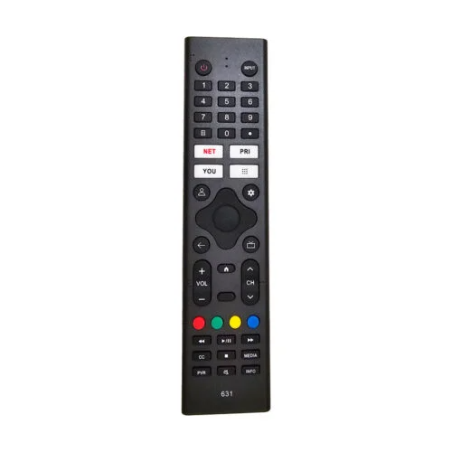
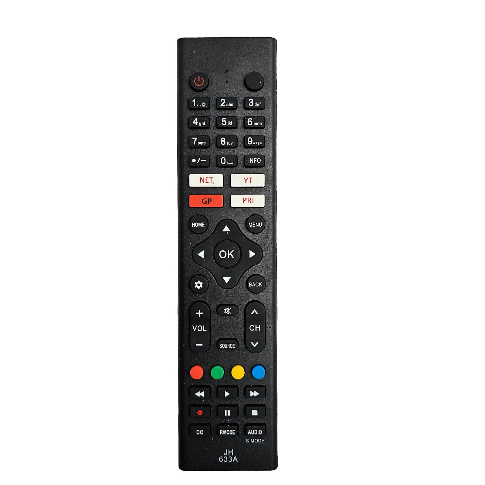

<!-- TCL vs PANORAMIC  -->
            <div class="mb-8">
                <h2 class="text-2xl font-semibold mb-4 custom-bg"> DAIHATSU VS CANDY  </h2>
                <h1 class="text-3xl font-bold custom-title">*NO EQUIVALENTES*</h1>
                <div class="horizontal-scroll">
                    <div class="item p-2">
                        
                        <p class="mt-2 text-center">1690</p>
                    </div>
                    <div class="item p-2">
                        
                        <p class="mt-2 text-center">1993</p>
                    </div>
                    <!-- Más controles -->
                </div>

                <h4 class="text-2xl font-semibold mb-4" style="font-family: Arial, sans-serif; font-size: 15px;">
                    SI BIEN CADA BOTON DE AMBOS CONTROLES SON IGUALES Y TIENEN LAS MISMAS FUNCIONES IMPRESAS, EL MODELO DE PANORAMIC(775), SE DIFERENCIA POR TENER 
                    UNAS LETRAS AZULES ESCRITAS EN EL 
                </h4>

            </div>
            